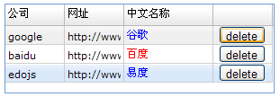
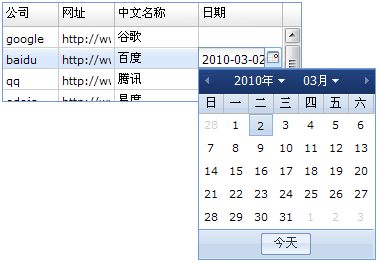
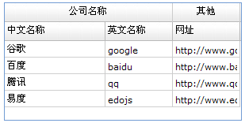
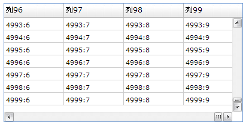

表格篇
表格的组成
EdoJS的表格由两部分组成：
1.表格显示组件：Edo.lists.Table
2.表格数据组件：Edo.data.Table
Edo.lists.Table是可视的表格组件，也是一般意义上的表格。负责界面表头、行、列的显示和操作。
Edo.data.Table是不可见的数据组件，可以理解为一个扩展的Javascript Array数组。负责表格的数据操作。
Edo.lists.Table具有两个非常重要的属性：
columns：负责表格表头、列、单元格的显示和编辑操作。
data：负责表格的数据操作。
data属性
Edo.lists.Table的data属性就是一个Edo.data.Table对象。
它负责表格数据操作，例如增加行、删除行、修改单元格、移动行等操作。
Edo.lists.Table通过监听Edo.data.Table的数据改变"datachanged"事件，更新自己的视图显示。
我们用一个简单的表格生成示例来说明Edo.data.Table与Edo.lists.Table的配合使用：
var data = [ {name: '谷歌', en_name:'google', site: 'http://www.google.com'}, {name: '百度', en_name:'baidu', site: 'http://www.baidu.com'}, {name: '腾讯', en_name:'qq', site: 'http://www.qq.com'}, {name: '易度', en_name:'edojs', site: 'http://www.edojs.com'} ]; Edo.build({ id: 'tb', type: 'table', width: 300, autoColumns: true, columns:[ { header: '公司', dataIndex: 'en_name', editor: {type: 'text'} }, { header: '网址', dataIndex: 'site' }, { header: '中文名称', dataIndex: 'name', width: 150 } ], render: document.body }); //将一个Array数组对象转换为Edo.data.DataTable表格数据对象 var dataTable = new Edo.data.DataTable(data); //将Edo.data.DataTable表格数据对象设置给表格组件的data属性 tb.set('data', dataTable);

columns列配置
控制一个表格，有多少列，每个列显示什么内容，是由columns列配置对象来决定的。
以下是columns列配置的数据结构和配置属性：
[
{
header: '姓名', //表头列显示的文本内容
headerAlign: 'center', //表头列内容定位:left/center/right
dataIndex: 'name', //单元格映射的行对象属性
width: 100, //列的宽度
minWidth: 50, //列的最小宽度
enableSort: false, //是否允许此列排序
enableMove: true, //是否允许此列拖拽移位
enableResize: true, //是否允许此列拖拽调节宽度
//单元格渲染器
renderer: function(value, row, column, rowIndex, data, table){
//value: 单元格值。对应row[dataIndex]
//row: 行对象。是data对象的一个元素
//column: 列对象。就是具有"header、headerAlign、dataIndex..."的列对象。
//rowIndex: 行索引号
//data: 表格的数据对象Edo.data.Table
//table: 表格对象Edo.lists.Table
return ""; //返回此单元格显示的HTML内容(一般根据value和row的内容进行组织)
},
editor: { //单元格编辑器:适合所有从Edo.core.UIComponent派生的组件类
type: 'text'
}
},
//...
]
renderer单元格渲染器
一个单元格的显示内容，取决于两点：
1.dataIndex：如果配置了dataIndex，那么单元格默认显示行对象的dataIndex属性。
2.renderer：如果有单元格渲染器，那么单元格会忽略掉dataIndex的显示功能，而只显示从renderer函数返回的HTML字符串。
我们来修改下上面的表格示的列和渲染器：
//删除行对象函数 function delRow(rowIndex){ tb.data.removeAt(rowIndex); } Edo.build({ id: 'tb', type: 'table', width: 300, autoColumns: true, columns:[ { header: '公司', dataIndex: 'en_name', editor: {type: 'text'} }, { header: '网址', dataIndex: 'site' }, { header: '中文名称', dataIndex: 'name', width: 150, //renderer渲染器返回HTML renderer: function(v, r){ if(v == '百度') return '<span style="color:red;">'+v+'</span>'; else return '<span style="color:blue;">'+v+'</span>'; } }, { //扩展一个操作列:增加一个删除按钮 renderer: function(v, r, c, rowIndex){ return '<input type="button" value="delete" style="height:20px;" onclick="delRow(' +rowIndex+')" />'; } } ], render: document.body });
效果图如下：

editor单元格编辑器
我们可以通过鼠标点击或双击单元格，快速对这个单元格dataIndex映射的行对象属性值进行编辑。
列配置对象的editor属性，就是对应此单元格使用什么编辑器。
在上面的代码中，我们其实已经对“公司”列设置了一个text文本编辑器，下面我们增加一个日期列，给日期列设置一个日期编辑器：
Edo.build({
id: 'tb', type: 'table', width: 300, autoColumns: true,
columns:[
{ header: '公司', dataIndex: 'en_name', editor: {type: 'text'} },
{ header: '网址', dataIndex: 'site' },
{ header: '中文名称', dataIndex: 'name', width: 150},
{ header: '日期', dataIndex: 'date', width: 150,
renderer: function(v){
if(!v) return '';
return v.format('Y-m-d');
},
editor: {
type: 'date'
}
}
],
render: document.body
});
效果图如下：

多表头
多表头在一些企业级应用中需求比较多，因为多表头可以显示更多的信息分类。
我们知道，表格的表头是由columns列配置对象决定的，要实现多表头，我们只需要列配置数组，做成一个树状结构即可。
这里接上面的示例，演示如何实现多表头：
Edo.build({
id: 'tb', type: 'table', width: 300, autoColumns: true, height: 150,
headerHeight: 48, //设置表头高度
columns:[ //多表头列配置对象, 是一个以columns为子节点的列配置树
{
header: '公司名称', headerAlign: 'center',
columns: [
{ header: '中文名称', dataIndex: 'name', width: 150},
{ header: '英文名称', dataIndex: 'en_name', editor: {type: 'text'} }
]
},
{
header: '其他', headerAlign: 'center',
columns: [
{ header: '网址', dataIndex: 'site' }
]
}
],
render: document.body
});

性能和数据量
如果您没有使用过EdoJS的表格，那么您会对一个能承载“10列500行”数据的表格，感到满意。
现在，EdoJS所为您所演示的表格数据量，是“100列5000行”！
请看下面的测试代码：
//生成100个列 var columns = []; for(var i=0; i<100; i++){ columns.add({ header: '列'+i, dataIndex: i % 10 }); } //生成5000行数据 var data = []; for(var i=0; i<5000; i++){ var o = {}; for(var j=0; j<10; j++){ o[j] = i+':'+j; } data.add(o); } Edo.build({ id: 'tb', type: 'table', width: 400, height: 200, columns: columns, //设置列 data: data, //设置数据 render: document.body });

EdoJS的表格组件，具备世界顶尖级的性能和功能，更具备无与伦比的扩展能力：
从Edo.lists.Table，扩展出了树形组件Edo.lists.Tree；
从Edo.lists.Table，扩展出了甘特图Edo.lists.Gantt；
从Edo.lists.Table，扩展出了电子表格Edo.lists.Excel；
EdoJS的DatePicker日期选择组件，也是使用Edo.lists.Table开发的；
等等...
更多Edo.data.Table表格数据对象的信息，请查阅Api文档。